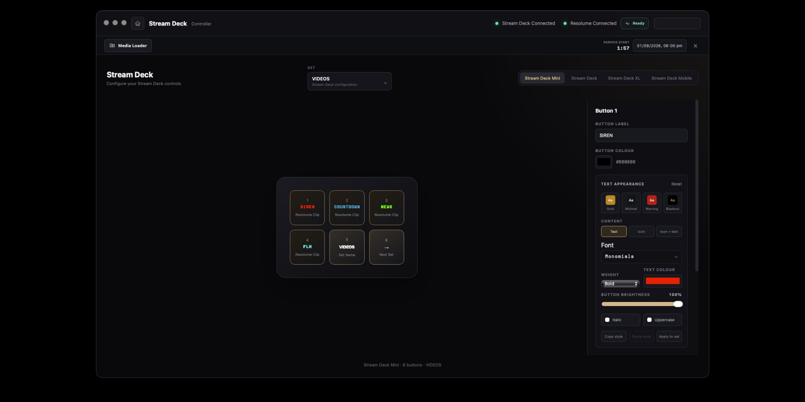
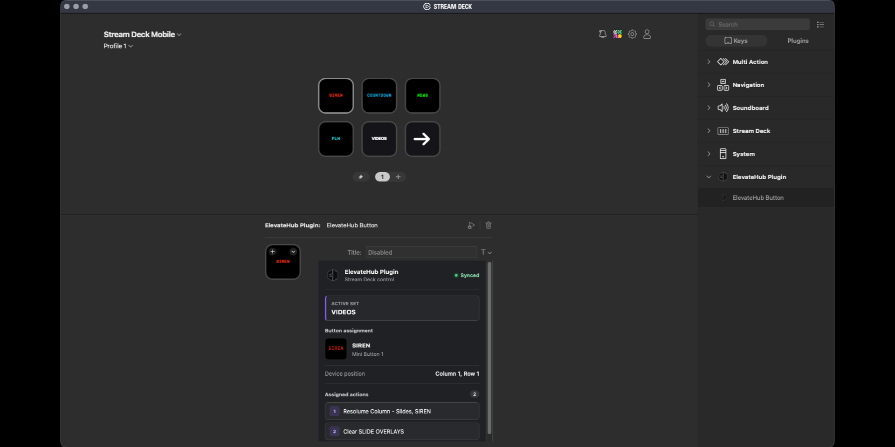
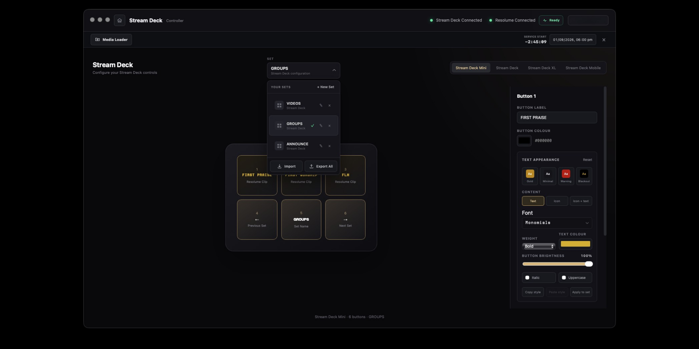
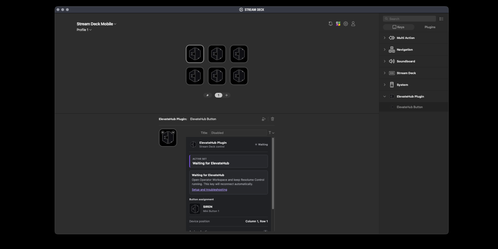

Install and update
Download ElevateHub, install ElevateFlow, and keep every installed studio current from the Hub.
Open installation guide ElevateHub
ElevateHub
Get your suite installed, connect your production tools, or sort out an issue before service starts.
Download ElevateHub, install ElevateFlow, and keep every installed studio current from the Hub.
Open installation guideInstall the plugin, open Resolume Control in ElevateHub, and assign your Hub buttons to Stream Deck keys.
View Stream Deck setupSelect your operator profile, enter your PIN, and keep personal layouts and controls separate on shared computers.
See common questionsDownload the current verified plugin, open the file, and let the Stream Deck app complete installation.
ElevateHub remains the source of truth. Stream Deck reflects the active set and sends presses back to the Hub.
Install ElevateHub and the ElevateHub plugin from the Elgato Marketplace, then restart Stream Deck.
Launch ElevateHub, select your profile, and open Resolume Control. The plugin connects automatically on the same computer.
Drag ElevateHub Button onto a key. Choose the matching device, set, and button in the Property Inspector.
The key should show the assigned label or action. The ElevateHub icon appears when the Hub connection is unavailable.
Every key stays readable, customizable, and connected to the active ElevateHub set.




Current builds are independently distributed and are not code-signed by an Apple or Microsoft certificate authority. Only download ElevateHub from this site or the official GitHub releases page.
Yes. Once installed, ElevateFlow can launch directly from Applications or the Start menu. ElevateHub remains the easiest place to install and update it.
The plugin connects to ElevateHub. Actions that control Resolume still require Resolume to be running and reachable from Resolume Control.
Resolume Control sets are kept with the selected ElevateHub team profile, so operators on the same computer can use separate layouts.
Include your operating system, ElevateHub version, and the exact step that failed.